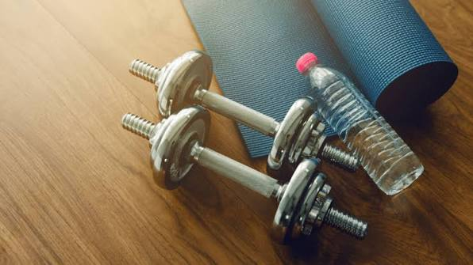

Kit para Derrotar a
Sazoniedade
nas Academias

Dicas de Ferramentas para sua academia, estúdio ou box
LUCRAR mesmo no período de baixa
"O frio e as férias do meio do ano estão chegando e se você
ainda não começou a preparar a sua acemia para isso, é bom
correr!"
Mas você não está sozinho
-
"Preparamos um Kit completo para te ajudar a não deixar o movimento
diminuir no seu negócio e ainda conseguir LUCRAR mais neste período.
Com este kit você vai."; -
Aprender ações práticas para manter o movimento na academia nos
períodos de baixa; -
Ter condições de executar campanhas bem estruturadas;
-
Descobrur que é possível lucrar nas épocas mais díficeis do ano;
-
E muito mais!.